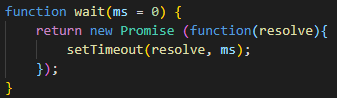
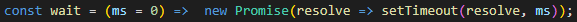

New in this video:
- general resolving function concept: 
- or as a one-liner: 
Excercise:
- Change the text to "Hell opened" when clicked, after a second
- Make it a square after one second
- Make it pink after half a second
- Make it square after circle a second
- Make it violet after after 0.3 second
- Fade it out after half a second